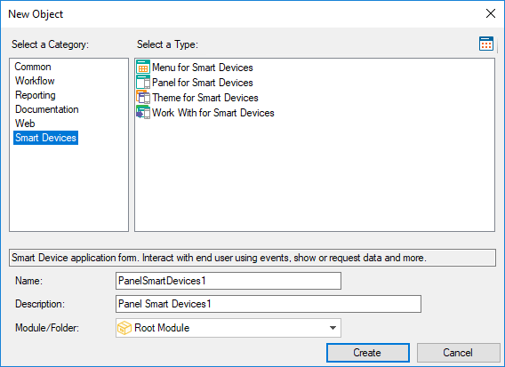

Newest Version
Smart Devices objects (GeneXus 16)
The methodology used by GeneXus to create mobile applications involves the following objects:

Menu object
Panel object
Theme for Smart Devices object (X Evolution 3)
Work With object